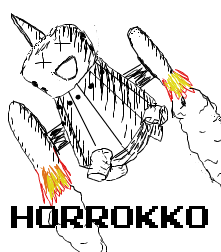
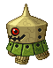

HP:
MML1: 64, 448 (Red)
MML2: 23 (B), 28 (A), 47 (S) [Green]
15 (B), 20 (A), 38 (S) [Blue]
30 (B), 45 (A), 80 (S) [Fire]
45 (B), 55 (A), 80 (S) [Ice]

Overview
Horokkos are easily the most recognizable reaverbots in the series. Heck, these guys are probably what pop into your head first
whenever the term 'Reaverbot' is mentioned. These reaverbots are generally seen as the "Mettaurs" of the Legends series, albeit without
the near-impenetrable defense. You can find these things on pretty much every island in the series barring Ryship, and they are also
rather easy to take out. They're pretty frail, and they can be kicked, thrown, and even run over should Megaman be wearing strong enough
armor. Interestingly enough, the design of these reavers seems to vary from island to island; the one on Kattelox have only one eye as
opposed to the 2 that the ones have on the other islands, and there are also ability differences depending on the environment they are
in, as well as some other minor cosmetic differences as well.

Horokkos come in quite a few flavors, some of which can pose a threat. The base versions'
main method of attack is to spin-tackle you, and the ones in MML1 can also fire bombs from their undersides. The ones in MML2 sit still
before striking, but the impact is a bit more powerful, consisting of one strong hit as opposed the their Kattelox-bound cousins' using
several small hits. Kattelox also sports a red variety of which can shoot fireballs from their undersides. These tend to be more aggressive
than their green counterparts, as they now pose a threat from both close and long range. Legends 2 sports elemental varieties; there are two
versions that are fire-elemented, appearing on Saul Kada and Elysium, respectively. These utilize the same tackle maneuver as the others,
but have the advantage of being able to spread the burn status on physical contact. Likewise, the icy variation dwells in Calinca's ruins,
spreading the freeze condition on physical contact.
It should be noted that both fire versions of the Horokko can be dropped out of the Engurbots, which can drop and endless supply on
Elysium. Needless to say, this an excellent way to earn zenny.
Dealing With It
These guys are pretty easy to take out, especially when you begin to get stronger armor (MML2). In their base forms, they never really
pose a true threat unless you're really early into the game. The elemental versions can be more of a problem, as having a status effect
drain your health is never a good thing. Simply throw/kick/shoot the ones that aren't on fire, and the ones that are can be taken out from
a distance. Of course, if you have the Flame Barrier, then proceed to knock yourself out. Also, I'd advise caution against the ones in
Calinca Ruins. On contact, they inflict Freezing AND Paralysis, so it's a good idea to have some Medicine on hand. You can throw them
without worry, though.
And no, you can't put the flaming ones out with the Aqua Blaster
Coming In for a Landing
Horokko/Zakobon is a pretty noteworthy reaver, and it pretty much carries the essence of the term in itself. The many variations on it
kept them from getting old, even if the ones in MML2 were just set on fire. It would have been nice if the new versions were a bit more
challenging, as by the time you hit Elysium they're incapable of touching you unless a couple of them bum-rush you at once. Horokko gets
an 8.5/10 from me.